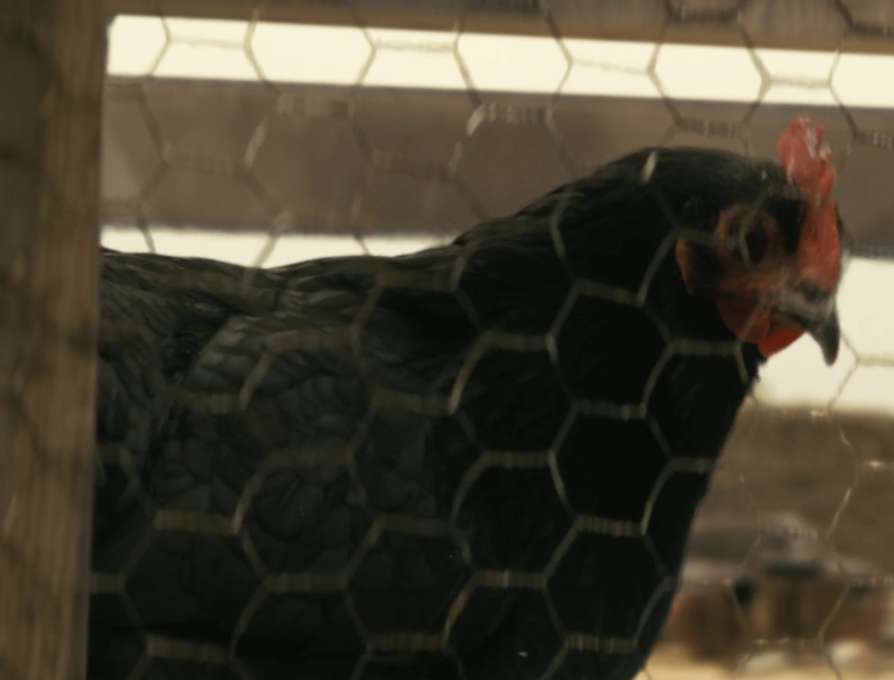
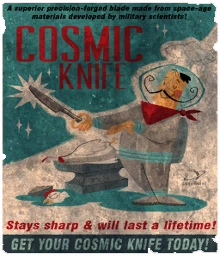
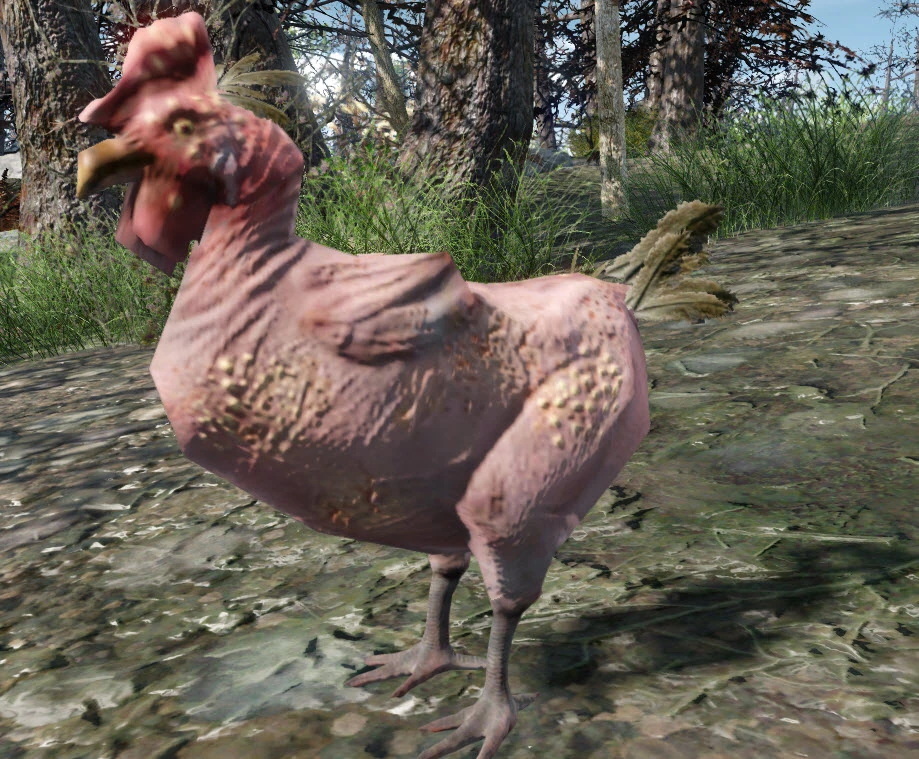
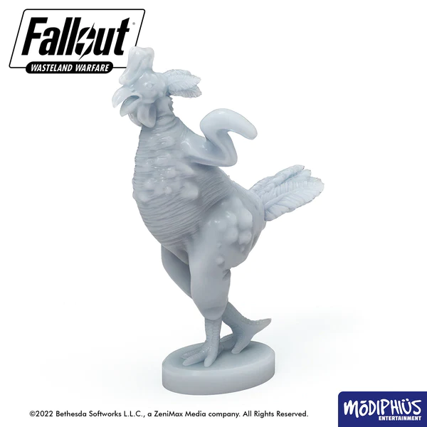
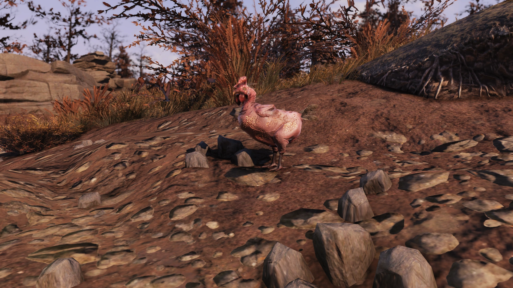
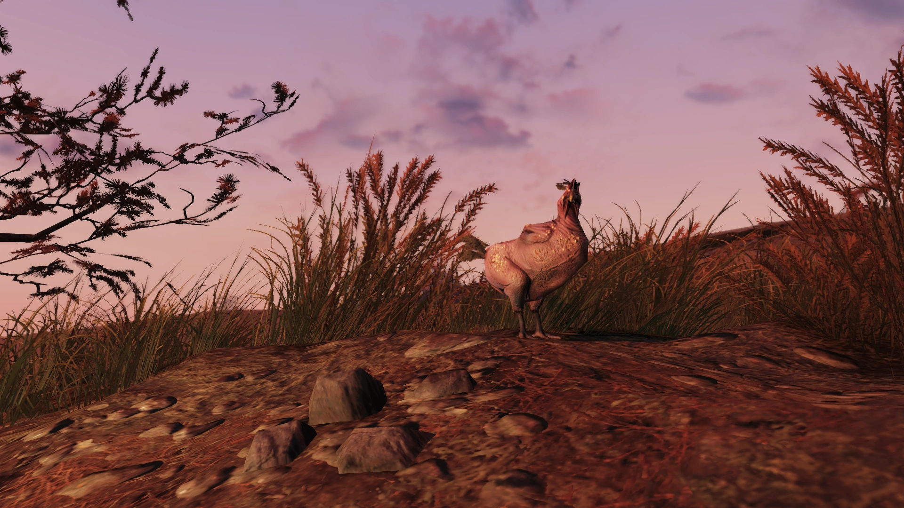
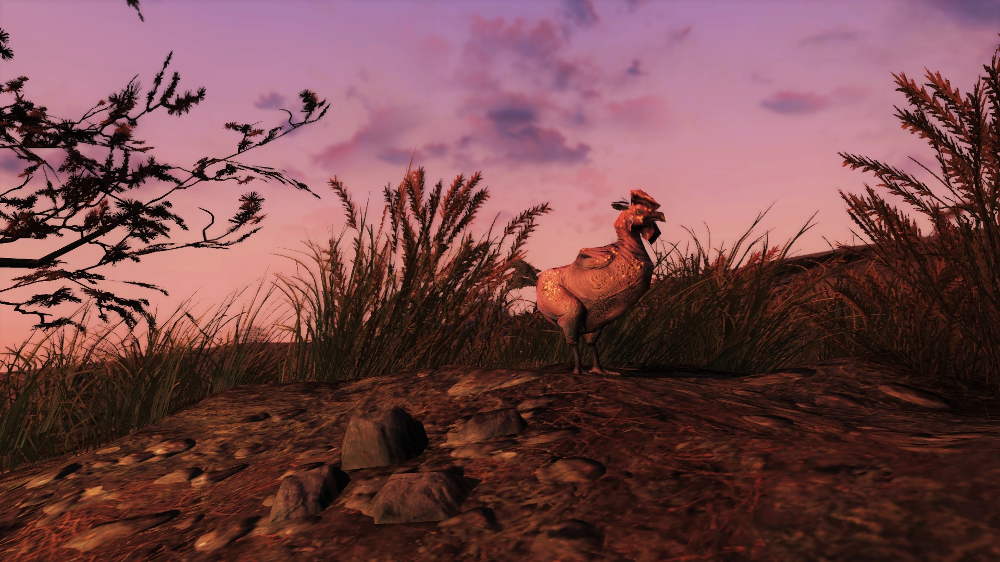

Chicken
ニワトリ
概要
ニワトリは、大戦以前から長く家畜化されてきた鳥類の、しばしば変異した子孫です。
一部のニワトリはバンカーに避難することで大戦を生き延びました。
アパラチアでは、より自然な形で生存しており、かなり一般的に見られます。
この地域の他のクリーチャーと比べて変異の度合いが低く、食用として利用されています。
エンクレイヴ研究施設のスタッフの一人は、ニワトリが他のクリーチャーほど変異していないこと、そして食用になることに言及しており、「焼却炉送りにするのはやめておこう。確か補給室のどこかにニンニクとパプリカがあったはず。あのピンクのゲテモノをもう一晩食べるのは勘弁だ」と記録しています。
種類
ニワトリ

一部のニワトリは比較的変異せずに生き延び、戦前の姿に近い外見を保っています。
2296年には、カリフォルニアでこうしたニワトリを飼育している人物が確認されています。
ラッドチキン
ラッドチキンは高レベルの放射線に曝された変異種です。
何世紀にもわたるアイランドの高放射線レベルへの露出は、地元のニワトリの個体群に深刻な影響を与えました。
翼と羽毛はほぼ完全に萎縮し、裸同然の状態で飛ぶことができません。
黄色や濃茶色の光る斑点と、蜘蛛の巣状の裂傷が体の大部分を覆っています。
戦前の祖先と比べてやや小型ですが、これらの違いを除けば、ラッドチキンは元の外見をほぼ維持しています。
ゲームプレイ特性
Far Harbor
ラッドチキンは完全におとなしく、まったく脅威になりません。
また、かなり臆病で、近くで戦闘が始まるとすぐに逃げ出します。
そのため、チキンの脚肉を狩りたい場合を除き、どんな状況でも無視して構いません。
全個体が日の出時に何度も鳴きます。
発見すると、他の敵と同様に赤い点として表示され、V.A.T.S.では敵対的とみなされます。
ステータス: レベル10 / HP 30 / 知覚 4 / 攻撃力 0
ドロップ: チキンの脚肉、キャップ（1〜5個、10%の確率）、ごく小さなジャンクアイテム（15%の確率）
Fallout 76
アパラチアのニワトリも完全におとなしく、近くで戦闘が始まるとすぐに逃げ出します。
アパラチアの荒野を旅する標準的なニワトリです。
ステータス: レベル1 / 知覚 0
ドロップ: チキンの脚肉、腸
出現場所
Far Harbor
- ブルックス・ヘッド灯台やノースウッド・リッジ採石場で時折見つかる
- アイランド東部エリア付近の道路上にまれに出現する
Fallout 76
- ファウンデーションの庭の隣にあるニワトリ小屋に約5羽がいる
- ロリンズ労働キャンプの屋外キッチンに死んだニワトリが1羽いる
- トレーディングポストに2羽がいる
- ニワトリ小屋をC.A.M.P.やワークショップに建設すると、内部に2羽のニワトリが出現する。生の肥料を生産するが、それ以外のインタラクションはできない
- ランダムエンカウンターとして、おびえたウエイストランド人を追いかけている1羽のニワトリに遭遇することがある。その人物はニワトリを殺すよう頼んできて、倒した後は感謝しつつ、そのニワトリを「モンスター」と呼ぶ
他のクリーチャーとの共同出現
ニワトリは、ビーバー、猫、キツネ、カエル、オポッサム、ラッドラビット、ラッドスタッグ、リスと共に「小動物トリオ」としてスポーンする可能性がある特定のロケーションで見つかります。
以下のような場所が含まれます:
- ムーンシャイナーの小屋の北、キャンプサイト
- 隔離されたキャビン西の池
- ゴーリー鉱山の南西
- オーバーシアーのキャンプの北西、橋を渡った先
- ハンターズ・リッジの北東
- ポセイドン電力変電所PX-01の南
- キャンプ・アダムスの北東
- キャンプ・アダムス展望台の南東
- チャールストン駅の東
- カウ・スポッツ・クリーマリーの南東の丘の上
- レイクサイド・キャビンとサマーズビルの間の干上がった湖底
- バーデット・マナーの南西
- ホーンライト・サマー・ヴィラの南
- モーガンタウン駅の西
- ヘムロック・ホールズ・メンテナンスの東
- ヘムロック・ホールズの西
- ウッズ・エステートの東
- 放棄された鉱山シャフト6の東
- ガラハン・マイニング本社の東の道路
- レッドロケット給油所の北
- レイノルズ湖の南東、建設現場
- サニートップ駅南の鉄道線路沿いの家の隣
- モノンガー電力変電所MZ-01の東
- モノンガー鉱山の北東の道路
- ルート63沿い、プレザント・バレー駅の東
- フリーク・ショーの東
- シーニック・オーバールックの東
- ファウンデーション東口の外
- モノレール・エレベーターの南
名前付きのニワトリ
- ブラッディ・ペッカー — ダガーズ・デンでブラッドイーグルズに飼われている
- バウク・バウク — アンキャニー洞窟のケージの中にいる
メモ
- 『Fallout 2』のマムは、ラッドスコルピオンのアンクルートが「チキンみたいな味がする」と述べている
- 『Fallout 2』のローズは、デスクローを「ニワトリ」と呼び、彼女の有名なオムレツの卵の出所としている。これは『Fallout: New Vegas』でジャス・ウィルキンスが語るウエイストランド・オムレツとして知られている
- 『Fallout 2』のイースターエッグアイテムは、元々「チキン」と呼ばれるコンパニオンを生成する予定だった
- 『Fallout 3』のヒルトップ農場廃墟ターミナルエントリでニワトリについて言及されている
- アーミテージは、Lone Wandererに対して「ニワトリの骨みたいに首をへし折ってやろうか」と脅す
- ウォルター・フィーバスは、ヘック・ガンダーソンへの復讐を引き受ける際に、妻エセル・フィーバスの怒りを「濡れためんどり」に例える
- 『Old World Blues』のクエスト「A Brain's Best Friend」で、Wild Wasteland特性を持っている場合、ゲイブの犬小屋の外にチキンの脚が見つかる
- 『Fallout 4』のバンカーヒル付近にある額装された絵には、ニワトリ、牛、馬が描かれている。同じ絵がDLC「Far Harbor」のMS アザレア号北西の無名トラッパー前哨基地にも飾られている
- 『Fallout Tactics』のグラフィティには「HUMANS TASTE LIKE CHICKEN（人間はチキンみたいな味がする）」と書かれている
- デルバート・ウィンターズは、ニワトリを使ってスープが作れると述べている
- スネークオイル・セールスマンは、ニワトリ・コレクターのニワトリを性的に虐待していたことで知られている
登場作品
ニワトリは『Fallout 2』『Fallout 3』『Fallout: New Vegas』DLC『Old World Blues』『Fallout 4』で言及されています。
生きたニワトリは『Fallout 4』DLC『Far Harbor』、『Fallout 76』、『Fallout: Wasteland Warfare』、そしてFallout TVシリーズに登場します。
ギャラリー






ニワトリの記事って、まとめてみると意外にシリーズ全体を横断してて面白いんですよね〜。
『Fallout 2』ではデスクローの卵を産む「ニワトリ」として登場してたり、イースターエッグでコンパニオンになる予定だったとか、初期の頃からなかなかネタ的な扱いが強い存在ですw
で、Far Harborでついに実物が登場するわけですけど、あの見た目がなかなかにキツいw
羽毛がほぼなくなって丸裸で、体中に光る斑点と裂傷がある…けど、攻撃力0で完全におとなしいっていうギャップがたまらないですね。
V.A.T.S.だと敵対扱いになるのに、実際は戦闘が始まると真っ先に逃げるっていう臆病さも愛おしいw
76ではファウンデーションの庭にいるニワトリたちがすごく好きで、荒廃した世界の中でちゃんと畜産してる入植者たちの生活感が伝わってきます。
C.A.M.P.にニワトリ小屋を建てると2羽住みついてくれるのも、意外とアパラチア生活の癒し枠で重宝するんですよね〜。
あと、ランダムエンカウンターでニワトリに追われてパニックになってるウエイストランド人のイベントは何度見ても笑いますw 倒した後に「あのモンスターから救ってくれてありがとう」とか言われると、「いやただのニワトリだけどw」ってなります。
TVシリーズのカリフォルニアでちゃんと変異してない普通のニワトリが飼育されてるっていうのも、荒野の中に「日常」がまだ残ってるんだなっていう温かみがあって良いですね！
名前付きのブラッディ・ペッカーやバウク・バウクも、それぞれブラッドイーグルズに飼われてたりケージに入れられてたりなかなかのストーリーを感じさせますw
This article was created by translating and editing Chicken, Rad chicken, and Chicken (Fallout 76) from Nukapedia: The Fallout Wiki.
Licensed under the Creative Commons Attribution-Share Alike License (CC BY-SA 3.0).
コミュニティ維持のため、寄付を受け付けております。
> COMMENTS